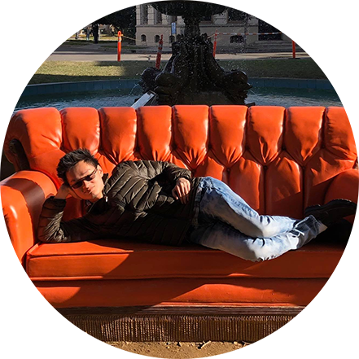

|  | Alexander Bo QuahAnimator, Character Designer, and Concept Artist 🧋☕ |
I am a graduate from DePaul University with a Bachelor in Fine Arts and emphasis on Animation: Cinema. Growing up, I am heavily influenced by personal experience from when growing up. I have a strong passion for visual storytelling and admire animation and film as mediums that can tell stories in relatable and non-conventional ways. My aspiration is to teach the life-lessons that propelled my self-growth and do the same to my audiences. Outside of animating, I enjoy playing games, visiting cafes at cafes, and taking nature walks. Personal connoseiur for boba teas and coffees. My favorite icons in media include Monster Hunter, Pokemon, and JRPGs.
| Type of skill | Software | Rating |
|---|---|---|
| Digital Painting | Adobe Creative Suite(Photoshop & Illustrator) | ⭐⭐⭐⭐⭐ |
| 2D Hand Drawn Animation |
TV Paint Toon Boom Harmony Adobe Animate |
⭐⭐⭐⭐⭐ ⭐⭐ ⭐⭐⭐ |
| 3D Animation |
Autodesk Maya Blender |
⭐⭐⭐⭐ ⭐⭐⭐ |
| Dates | Work | Description |
|---|---|---|
| 10/7/2021 – 3/12/2022, | Character Animator & Background Artist, Internship - Mista Pat Project | Animated character driven scenes in Adobe Character Animator and designed multiple backgrounds in Photoshop for educational videos aimed at underprivileged kids. |
| 8/20/2021 – 1/15/2022 | Storyboard Revisionist - The Challenger | Refined all storyboards in photoshop, while maintaining original ideas for various assets, frames, and designed characters. |